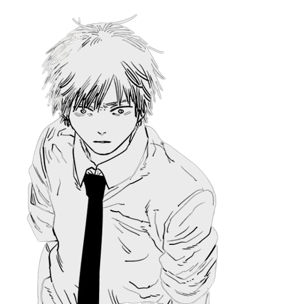
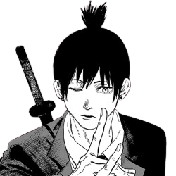
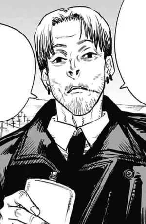
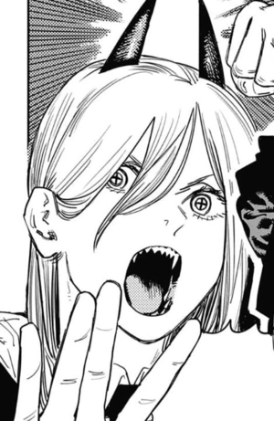
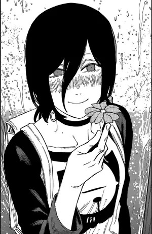
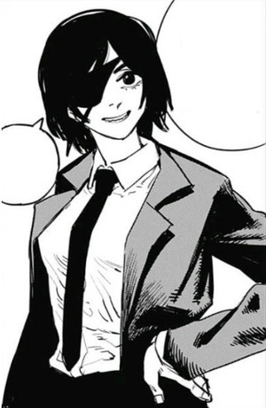

Denji

Denji est le protagoniste de Chainsaw Man. Jeune garçon, il hérite des dettes de son père des Yakuzas. Après avoir rencontré Pochita, il devient un Devil Hunter pour les Yakuzas en
essayant
rembourser sa dette. Après que les Yakuzas, qui étaient sous le contrôle d’un Devil, l’aient trahi, il meurt et Pochita devient son cœur.
Il peut maintenant devenir le Chainsaw Devil en tirant la corde sur sa poitrine. Après avoir rencontré Makima, il est devenu un Devil Hunter de la sécurité publique.
Makima

Makima est une Devil Hunter de la Sécurité Publique de haut rang, qui a pris Denji comme son « animal de compagnie » et lui a proposé de devenir à son tour un Devil Hunter. Dans un premier temps, elle participe à la lutte contre les démons, à la tête de la 4e section spéciale Anti-Démons
. Elle se révèle par la suite être l'incarnation du Démon-Domination, et la principale antagoniste de la première partie du manga. Elle fait partie également
des Quatre cavaliers de l'apocalypse.
Aki

Aki Hayakawa est un Devil Hunter de la Sécurité Publique, et membre de la 4e quatrième section spéciale Anti-Démons de Tokyo. Il a passé un contrat avec
le Démon-Malédiction et le Démon-Future,
ainsi qu'un ancien avec le Démon-Renard. Il est plus tard tué et possédé par le Démon-Flingue, devenant ainsi l'hominidémon-flingue..
Il y a aussi de nombreux autres personnages tous aussi intéressants les uns que les autres: en voici quelques uns
| Kishibe |
Power |
Reze |
Himeno |
|  |
 |
 |
 |
L'auteur arrive habilement à développer ses personnages à travers ces différents moyens:
- Ils ont tous rêve à accomplir
- Des scène du quotidien qui nous permettent de s'attacher à eux
- Des moments tragiques qui boulversent l'oeuvre au complet
- Une grande part de réalisme qui nous permet de plus facilement nous identifier à eux